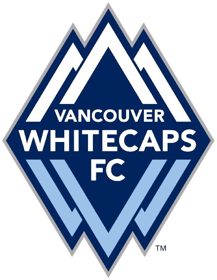
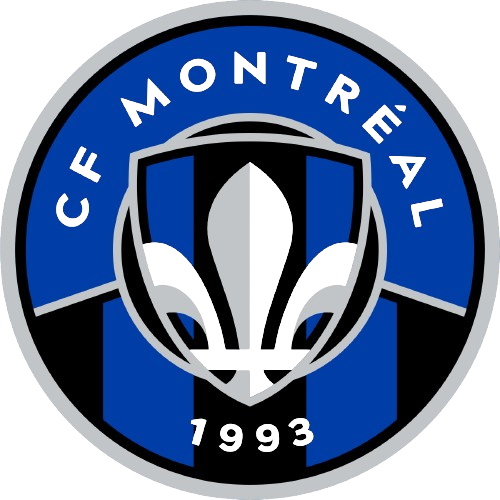
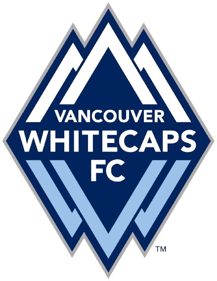
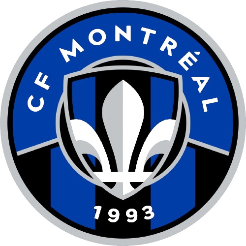

cMLS
As one of my hobbies is to play and watch soccer, this website will be
based on one of the leagues I watch. This website will be used to
explore all three of the Canadian teams in Major League Soccer (MLS).
I wanted to create a website that could show and talk more about
Canadian soccer, and this is just the start. “cMLS” is basically the
Canadian teams in Major League Soccer, which can be shown by the
unique logo as well.
The MLS was founded in 1993, and their first season was played in
1996. The league first started with only 10 teams, but now it has
grown to 29 teams as the popularity of soccer in the United States
and Canada keeps on growing. The MLS is a professional soccer
league comprising 29 teams, of which 26 are from the United States
of America and 3 are from Canada. This website will be covering the
three teams from Canada. The three teams are Toronto FC, the
Vancouver Whitecaps, and CF Montreal, formerly known as the
Montreal Impact.